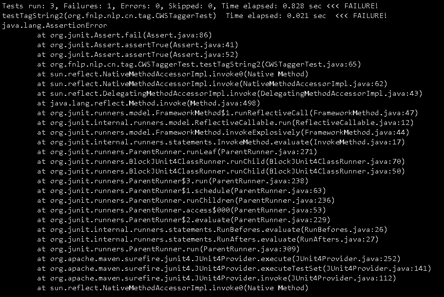
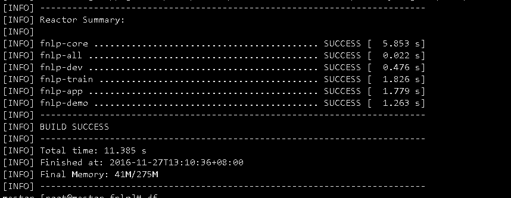

最近在研究dl4j的学习，其中有使用FNLP作为分词的例子。版主尝试编译源码，经过不断的查找验证，得到可行的方式。
编译
FNLP的源码已经在github上，地址为：(https://github.com/FudanNLP/fnlp),感兴趣的朋友可以下载编译学习。同时针对下载困难的Jar包，FNLP的作者利用国内百度云盘作为下载地址，可以下载相关Jar包和Model，地址为：(http://pan.baidu.com/s/1D7CVc)。根据Github上作者的提示，将Model文件通过百度云盘下载到相应路径下，就可以编译。
版主利用GIT来克隆源码到本地：
git clone |
然后利用Maven3来编译源码：
|
但是在编译过程中遇到Plugin的错误：

只有使用跳过测试的选项，才可以通过编译：
mvn clean install -Dmaven.test.skip= |

注
- Maven下载Jar包中，比较困难的是trove4j-3.0.3.jar，最好到百度云盘中直接下载，本地Maven安装，具体可以参考：Maven install:install-file ；
- 相关模型需要自己动手下载到相关路径下，也就是~/git/fnlp/models/这个路径下面；
- 其他相关NLP的工具，其中有Apache的OpenNLP、哈工大的NLP等。
本博客所有文章除特别声明外，均采用 CC BY-SA 4.0 协议 ，转载请注明出处！